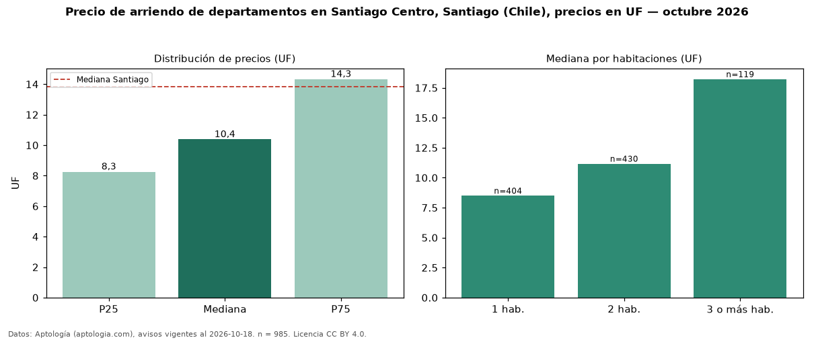

Precio de arriendo de departamentos en Santiago Centro, Santiago (Chile), precios en UF — octubre 2026
UF 10,38 al mes es el canon mediano de departamentos en arriendo en Santiago Centro, Santiago (Chile) (n = 985 avisos). Frente a la mediana de Santiago para departamentos (UF 13,85), queda 25 % por debajo. Por metro cuadrado, la mediana es UF 0,24/m² al mes (n = 789 avisos con área), 14 % por debajo de Santiago (UF 0,28/m²). Por precio mediano es el puesto 8 de 10 comunas de Santiago con al menos 30 avisos de departamentos en arriendo (UF): entre las más económicas. Con el precio por m² de venta del mismo segmento (UF 55,74/m²), la rentabilidad bruta implícita es 5,1 % anual (aproximación con medianas de ofertas distintas). El área mediana anunciada es 44 m². El segmento con más oferta es el de 2 habitaciones (430 avisos, mediana UF 11,17); pasar de 1 habitación a 3 o más habitaciones cambia la mediana +114 %. La mitad central de los avisos va de UF 8,26 a UF 14,33 (razón 1,7), una dispersión moderada. Datos: Aptología (aptologia.com), CC BY 4.0 — https://www.aptologia.com/cl/arriendo/santiago/santiago-centro. Archivos: PDF, CSV con las cifras y gráfica PNG.

| Avisos únicos | 985 |
|---|---|
| Percentil 25 | COP 8 |
| Mediana | COP 10 |
| Percentil 75 | COP 14 |
| Mediana por m² | COP 0 |
Fuente: avisos vigentes de portales inmobiliarios recopilados por Aptología, deduplicados (mínimo 30 avisos únicos por celda). Precios pedidos, no cerrados. Fecha: 2026-10-18.